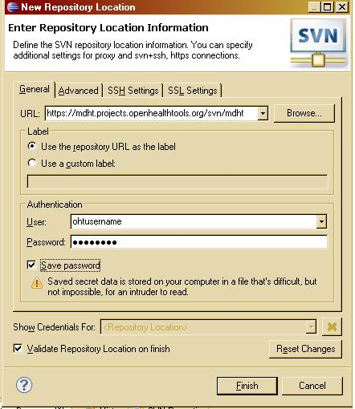

The CDA models are maintained in Subversion, a free/open-source version control system, on the MDHT site. The following instructions will walk you through the process of down loading the model projects.
First, we must switch to the Subclipse perspective by selecting Window > Open Perspective > Other... > SVN Repository Exploring
Second, we will need to add the MDHT repository.
To add a repository you can right click in the SVN Repository view and select New > SVN Repository, or you can click the add repository button in the toolbar of the SVN Repository view.
First you need to fill out the URL for the repository using the following MDHT Repository Location:
http://mdht.projects.openhealthtools.org/svn/mdht
Next, you must provide your user id and password. The user id and password fields are the same as the login used to sign in at the OHT website.

Click the + next to your repository to start browsing the repository.
To check out a project right click on any folder/project and select Check Out as Project. USe the CTRL key to support multiple selections.
If the project that you are checking out already exists in the workspace, the old project will be destroyed and the project from the SVN repository will be created in its place. Otherwise a new project will be created in the workspace.
Check out the following projects located within the MDHT Subversion repository.
Hit Finish to checkout the projects into the default workspace.

The projects will be checked out to your workspace. When the process is complete, you can now Switch back to the modeling perspective to open the projects.